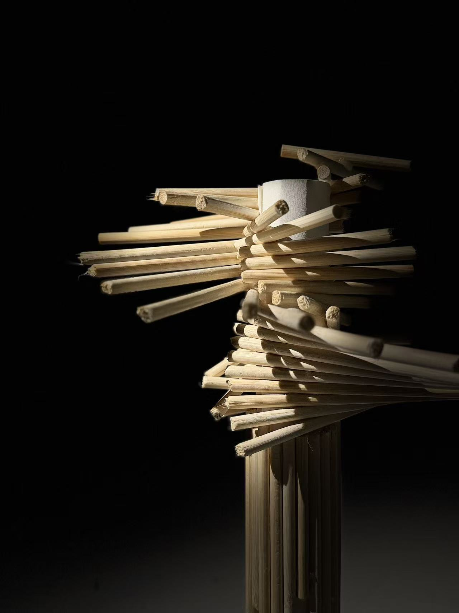

Hello, I am Xin He. This is an architectural portfolio dedicated to the exploration of space, materiality, and tectonic form.

Concept: An architectural exploration of helical structures, featuring a spatial stacking of wooden sticks of equal length positioned tangentially to a circle and rotating upward at a constant angle. Analysis: A structural study driven by innovative tectonic logic. The entire model stands vertically on a single plane, seamlessly demonstrating architectural mechanical equilibrium.
Material: Basswood, Acrylic Description: A 1:20 scale model integrating traditional joinery with parametric design to test joint stress distribution.
Software: Rhino, V-Ray, Photoshop Description: An investigation into the dialog between monolithic concrete and water reflections under overcast lighting.
Medium: AutoCAD, Illustrator Description: A detailed analytical drawing dissecting pedestrian circulation and underground infrastructure within a high-density urban context.